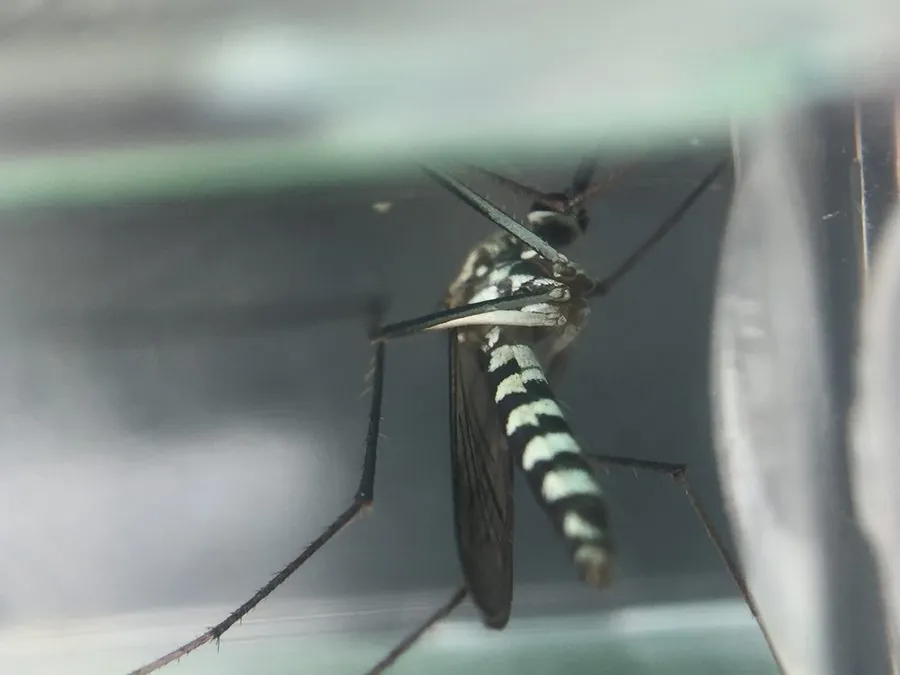

昆虫 · 动物界
骚扰阿蚊 Armigeres subalbatus

体型粗壮、体色深褐的蚊类，白天也敢叮人，幼虫孳生于粪池和污水容器，可传播丝虫病。
- 分类
- 门节肢动物门纲昆虫纲目双翅目科蚊科属阿蚊属
- 栖息环境
- 人居附近的猪舍、厕所、粪池、竹筒与阴湿树丛
- 地理分布
- 中国长江以南各地及东南亚、日本
- 保护级别
- 常见卫生害虫，无保护需求
物种志
骚扰阿蚊的成虫体长约六毫米，体型粗壮，体色深褐，喙粗短，胸背和腹部有白色鳞片形成的斑纹，足上也有白环。它与其他蚊种不同，白天也常在阴暗处活动叮人，飞行时声音低沉，被叮咬往往毫无预兆。幼虫体粗壮，尾端呼吸管短，常见于粪池、污水缸和竹筒积水中，耐污能力很强。
它分布于中国长江以南以及东南亚、日本等地，栖息在人居附近的猪舍、厕所和阴湿树丛。雌蚊昼夜均可吸血，尤其喜在黄昏和清晨袭击人畜。幼虫在富含有机质的污水中发育，粪池里常能捞到成群的幼虫，因此它的数量与环境卫生关系极大。它能传播班氏丝虫病，骚扰性极强。防治以改造厕所、加盖粪池和清除容器积水为主，室内成虫可用气雾剂处理。
形态与习性
- 体长约六毫米，体型粗壮
- 体色深褐，胸腹有白色鳞斑，足带白环
- 活动时间昼夜均可叮人，黄昏清晨最凶
- 孳生粪池、污水缸、竹筒积水
- 传播班氏丝虫病
- 防治改造厕所、加盖粪池、清除积水
趣味知识
- 大多数蚊子在夜里出没，它却敢在大白天追着人叮。
- 它把卵产在粪池和臭水缸里，越是脏的水，幼虫长得越好。
- 它飞近时几乎没有声音，等人觉得痒时早已吸饱飞走。